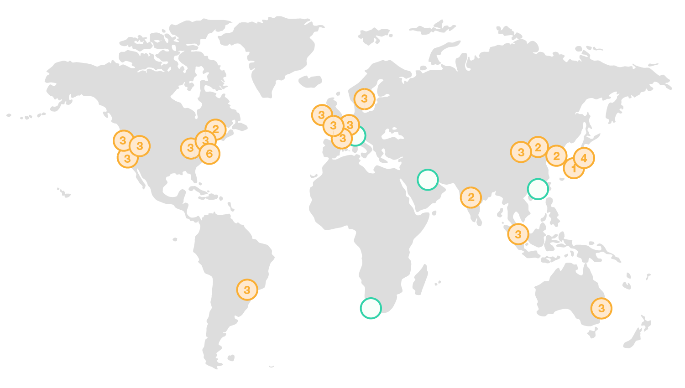

AWS week
 ️
️️
Michal Wojtowicz
michal@wojtowicz.ovh

Michal Wojtowicz
Senior Cloud Developer


Slides deck
http://michailw.github.io/talks/aws/en/
Lets go!
What is cloud?
What is cloud?
- a service which sells software and/or IT infrastructure
- eliminates need of buying licenses
- eliminates need of buying hardware
- it takes out a duty of management

© acloud.guru
Advantages - from developer scope
- users are always up-to-date
- zero maintenance of old versions
- increase of delivery frequency
- no time-frame between releases
- CI/CD - delivery on time of passed tests
Disadvantages - from developer scope
- all bugs are immediately visible for all users
- need of monitoring, 24/7 duty
- SLA/SRE
- CI/CD - need to cover everything with tests
Cloud models
IaaS / Paas / SaaS
Infrastructure Platform Software
... as a Service
 Google Cloud
Google Cloud

AWS - basic info
Regions
Regions
- 21 regions
- 60 availability zones
- special region - China (Beijing, Ningxia)
- special region - US GovCloud (US-East, US-West)
US GovCloud

US GovCloud
- available only for USA citizens (or "green card" owners)
- available only within USA territory
US GovCloud - certifications

Identity and Access Management (IAM)
IAM
- access controll over AWS resources
- authentication and authorization layer
- allows to share AWS resources within one AWS account
- atomic permissions system
- secures resources from apps running in AWS
- MFA
- Eventually Consistent
- always free üí∞
IAM - users
- root user - full controll
- IAM user - user with permissions set
- user can authenticate with login/password
- user can authenticate with API keys
- users data can be propagated from 3rd party (SSO)
- users can be grouped
IAM - permissions, policies
- policy - a permissions set without a relation
- rules within policy can grant or deny access
- policy can be related to users, groups and roles
- each user/group/role can have multiple policies
- rules can be general or specific
IAM - roles
- role - fake "identity"
- each role can contain many policies
- role is temporarly assigned to user or resource
Virtual private Cloud (VPC) 1/2
- your own, isolated network inside AWS
- illusion of your own data center
- as owner, you manage an access to your VPC from the Internet
Virtual private Cloud (VPC) 2/2
- static IPv4 (elastic IP)
- many IP addresses per resource
- create/assign network interfaces
- configure security groups during uptime of VPC
- controll network traffic
- network access control lists
 EC2 Instances
EC2 Instances
Elastic Compute Cloud
EC2 Instances
- virtual machines
- instance type based on CPU, RAM, IOPS and GPU
- any amount of disk volumes
- you pay only for running instances
EC2 Instances - sales model
- on-demand
- reserved
- spot instances
- dedicated host
EC2 Spot instances
- cost reduction (up to 10x)
- can be taken off (2 minutes notification)
EC2 Spot Fleet
- spot-instance cluster, required to run an app
- can be mixed with on-demand instances
- automatic rules which can lower TCO
EC2 Instances - types
- General Purpose
- Compute optimized
- Accelerate Computing (GPU)
- Storage optimized
Amazon Machine Image (AMI)
- image of an instance
- can be paid
- you can store your own AMIs
Instance store
- temporary storage
- data are ephemeral when machine is stopped/deleted
- good for buffers, caches or compute&upload flow
Elastic Block Storage (EBS)
- block storage dedicated for EC2 instances
- high availability
- recommended for fast data access
- recommended for long data access
- supports encryption
Questions
Slides deck available at
https://michailw.github.io/talks/aws/en/
AWS week
Day 2 - Networking, security, load balancing
Michal Wojtowicz
michal@wojtowicz.ovh
Live questions

Security groups (EC2)
- firewall working on 4th OSI layer
- can filter ICMP packets
- can filter TCP/UDP packets
- allows to filter ports range
- allows to filter IP addresses range
- works bidirectional
Elastic IP (EC2)
- IPv4 address related with our AWS account
- it's switchable
- no support for IPv6
- paid, if not used
Network interfaces (EC2)
- "virtual network adapter"
- multiple private IPv4 addresses within our VPC pool
- one public IPv4 address
- many public IPv6 addresses
- it has MAC adres
- can have assigned many security groups
Virtual private Cloud (VPC) 1/2
- virtual network in AWS infrastructure
- illusionof your own data center
- owner of VPC manages incoming/outgoing access of the VPC
Virtual private Cloud (VPC) 2/2
- static IPv4 addresses (elastic IP)
- many IP addresses can point to a resource
- management of network interfaces
- controlls network traffic
- changes to security groups on-the-fly
VPC - IP addresses
- each VPC is addressed with one of these IP addresses: 10.0.0.0/8, 172.16.0.0/12, 192.168.0.0/16
- VPC wraps all AZ within a region
- VPC can be divided into subnets
VPC - subnets
- subnet is part of larger address pool
- subnet wraps only one AZ
VPC peering
- private connection between two VPCs
- allows connecting VPCs accross regions or AWS accounts
- it doesn't use VPN or gateways (no bottleneck)
- there's not any single-point-of-failure
- there's not additional internet transfer markup
NAT gateway (VPC)
- allows to connect VPCs to the Internet
- denies access to AWS resources incoming from the Internet
Internet gateway (VPC)
- allows access to AWS resources incoming from the Internet
- allows route traffic to resources within VPC for incoming requests
Network ACL (VPC)
- firewall of 4th OSI layer
- dedicated for subnets
- each subnet has at least one default ACL assigned
- by default, ACL allows all traffic
Elastic Load Balancer (EC2)

Load balancer types (EC2)
- Network load balancer
- Classic Load Balancer
- Application Load Balancer
Network load balancer (EC2)
- 4th OSI layer
- juggles TCP packets
- it can have a static IPv4 address
- it can resolve SSL (TLS)
- targets EC2 instances or IP addresses
Classic load balancer (EC2)
- 7th OSI layer
- works only with HTTP
- sticky sessions
- targets EC2 instances or IP addresses
- does not work with websockets
Application load balancer (EC2)
- 7th OSI layer
- works only with HTTP
- sticky sessions
- targets EC2 instances or IP addresses, or Lambda functions
- handles websockets
- works with HTTP/2
- routing based on hostname / pathname
- authentication
- redirects
Questions
Slides deck available at
https://michailw.github.io/talks/aws/en/
Thank you for your time!
Slides deck available at
https://michailw.github.io/talks/aws/en/
 /in/wojtowiczmichal
/in/wojtowiczmichal michal@wojtowicz.ovh
michal@wojtowicz.ovh